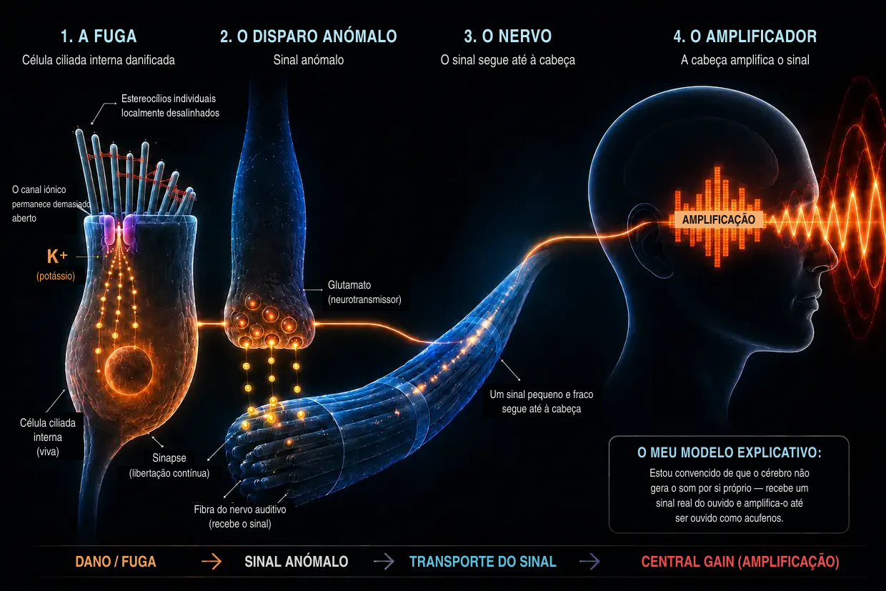

Acufenos causados pelo ruído — quando o ouvido chega ao limite
Última atualização: agosto de 2026
Isto é a minha própria explicação, baseada em anos de pesquisa e na minha própria experiência com dois episódios de acufenos, que superei — não é a explicação médica padrão.
Também eu fui, naquela altura, afetado por esta doença extrema — como já tinha contado na minha biografia.
Estava tão desesperado que jurei a mim próprio: ou os acufenos desaparecem, ou desapareço eu. (É claro que não o dizia totalmente a sério, mas estava realmente sob uma pressão imensa.)
O que vivi naquela altura foi sobretudo um som alto, estridente e de alta frequência no ouvido esquerdo, acompanhado por um chiado muito ao fundo. Era a pior coisa que eu conseguia sequer imaginar naquele momento. Como se não bastasse, no terceiro dia já tinha surgido também um apito fraco no ouvido direito. Pouco depois, esse som já existente à direita tornou-se claramente mais forte — como consequência direta de instruções dos médicos que, para mim, pessoalmente, se revelaram completamente erradas.
Estas «instruções» resumiam-se, no essencial, a encobrir o som com outros sons — por exemplo, com música nos auscultadores a um volume mais elevado ou com ruído contínuo. Na realidade, porém, isso significava expor os meus ouvidos a ainda mais estímulos sonoros, apesar de já estarem enormemente sobrecarregados. Em retrospetiva, foi um dos maiores erros, porque foi precisamente isso que piorou o meu estado e intensificou claramente o som fraco que já existia no ouvido direito.
O som era como um ataque permanente aos meus nervos, ao meu sono e à minha vida inteira. Os médicos disseram-me que tinha de aprender a viver com aquilo. Na Internet, encontrei terapias que se contradiziam umas às outras. Para mim, tudo soava a falta de respostas.
Então jurei a mim próprio: isto não pode ser tudo. Comecei a pesquisar como um obcecado, a ler estudos, a comparar relatos de experiências e a formar a minha própria opinião. Pouco a pouco, começou a desenhar-se um mecanismo claro — uma imagem que, para mim, era lógica e que mais tarde também se confirmou nas minhas próprias experiências.
Hoje posso dizer: os acufenos causados pelo ruído não são um mistério. São o resultado de o ouvido ter sido sobrecarregado — e, quando se percebe o que acontece ali, percebe-se também porque existe aquele som e o que se pode fazer por si próprio.
Resumo Ler em 60 segundos — o essencial num relance
Com um volume extremo (por exemplo, numa discoteca), as bombas deixam simplesmente de conseguir acompanhar. O consumo de energia (ATP) explode, a célula deixa de conseguir repor energia suficiente e passa para um modo de emergência imperfeito, no qual se produz ácido láctico e o meio se torna ácido — uma espiral descendente, semelhante à falha muscular durante um sprint. Quando as bombas deixam de conseguir acompanhar, o cálcio acumula-se no interior dos minúsculos cílios sensoriais. Este excesso de cálcio ativa enzimas de degradação (calpaínas), que comem a «cola» (crosslinkers) entre os filamentos estruturais internos do cílio. Sem esta cola, o cílio perde a rigidez e deforma-se. Com isso, o canal iónico na ponta fica permanentemente demasiado aberto — como uma janela entreaberta. Através desta fuga permanente, o potássio entra sem parar, mantendo toda a célula sob tensão elétrica contínua. Esta tensão abre, na própria célula ciliada interna, outros canais, através dos quais o cálcio escorre gota a gota até à sinapse e aí desencadeia uma libertação ininterrupta de glutamato para o nervo auditivo. O cérebro recebe este sinal anómalo, fraco mas constante, reconhece que falta o input normal nesta faixa de frequências e aumenta ao extremo o seu pré-amplificador interno (Central Gain). Só através desta amplificação é que o sinal anómalo subtil se transforma no som conscientemente percetível — os acufenos.
A boa notícia: enquanto a célula estiver viva, possui o plano de construção e a capacidade de reparação. Para isso, precisa de energia, materiais de construção e repouso.
O que realmente acontece no ouvido: o processo fisiológico normal da audição
Antes de mergulharmos no tema, uma breve clarificação de termos, para nos entendermos corretamente ao longo de todo o texto: no ouvido interno encontram-se as chamadas células ciliadas — são as verdadeiras células sensoriais da audição. Na superfície de cada célula ciliada encontra-se um feixe de minúsculos prolongamentos em forma de dedos — os estereocílios. Cada célula ciliada tem, consoante a sua posição na cóclea, cerca de 50 a 300 estereocílios, dispostos em fileiras, dos mais curtos aos mais compridos, como tubos de órgão. Cada um destes estereocílios possui a sua própria estrutura interna de suporte feita de proteínas de actina. Na linguagem corrente e na investigação, estes estereocílios são muitas vezes designados simplesmente por «cílios» ou «cílios sensoriais» — e é precisamente assim que também uso o termo nesta página. Importante: quando falo de «cílios», refiro-me sempre aos estereocílios sobre a célula ciliada, não à própria célula ciliada.
Importante para a cadeia de sinalização: quando descrevo a libertação de glutamato na sinapse e o sinal para o nervo auditivo, refiro-me expressamente à célula ciliada interna.
Normalmente, o processo auditivo decorre como uma reação em cadeia de alta precisão:
O impulso: um estímulo sonoro atinge os finos cílios (estereocílios) das células ciliadas e inclina-os para o lado.
A tração mecânica (tip links): como as pontas destes cílios estão ligadas entre si por filamentos proteicos extremamente finos (tip links), a inclinação cria tensão. Estes filamentos funcionam como um sistema mecânico de tração: puxam fisicamente o canal iónico na ponta, abrindo-o — como quando se puxa o tampão de uma banheira.
A entrada: como o ouvido interno está cheio de um líquido rico em potássio, através deste canal agora aberto entra imediatamente potássio (K+) no cílio sensorial — e também cálcio em pequenas quantidades.
A ativação: esta entrada de potássio altera a tensão elétrica da célula ciliada interna (despolarização). Isso abre, secundariamente, canais de cálcio mais abaixo na própria célula ciliada interna — não nos cílios sensoriais, mas no corpo celular que se encontra por baixo.
O sinal: só este cálcio que entra na célula ciliada interna provoca a libertação dos neurotransmissores que disparam o sinal para o cérebro através do nervo auditivo.
O reset: depois, transportadores especializados — tanto nos cílios sensoriais como no corpo da célula ciliada — voltam a bombear o excesso de potássio e cálcio para fora com a ajuda de ATP (energia celular), para que a célula possa acalmar-se.
Este sistema foi concebido para que aconteça constantemente um pequeno «abre e fecha» — como um ritmo respiratório. O ponto decisivo é este: em repouso, o canal na ponta do cílio não está completamente fechado, mas permanece sempre um pouco aberto — isso é normal e intencional, para que a célula possa reagir de imediato, a qualquer momento, mesmo ao som mais ténue. Enquanto o cílio estiver direito, esta abertura permanece mínima e controlada. Mas, se o cílio ficar permanentemente inclinado para o lado, o canal fica demasiado aberto — e é precisamente isso que se torna um problema.
Antes de passarmos ao que acontece quando este sistema é sobrecarregado, há uma ideia importante a considerar: quando surgem acufenos crónicos depois de um trauma acústico, muitas pessoas afetadas pensam — e muitos médicos também transmitem essa impressão — que as células ciliadas do ouvido foram irreversivelmente destruídas e que o cérebro passou a produzir o som por si só, a partir da memória. Estou convencido de que esta explicação é insuficiente. Precisamente porque o som ESTÁ LÁ, estou convencido de que um sinal anómalo ativo tem de surgir algures no tecido periférico ainda excitável. Na cadeia principal do mecanismo que descrevo, este sinal provém de uma célula ciliada interna ainda viva e desregulada. Noutras configurações periféricas, a fonte também poderia ser um nervo auditivo vivo que dispara de forma anómala devido a problemas de mielina ou a inflamação. Em contrapartida, tecido completamente morto já não envia qualquer sinal.
O que se segue é uma explicação detalhada, passo a passo, desta perda de função. Quem preferir uma versão mais compacta encontra um resumo mais acima nesta página.
Quando o ruído se torna demasiado intenso (o que acontece numa ida à discoteca)
Mas, quando chega demasiado som de uma só vez ou de forma contínua (crónica), o equilíbrio rompe-se e a mecânica falha. Nem todas as idas a uma discoteca levam a isso — mas, quando surgem acufenos causados pelo ruído, estou convencido de que é precisamente este o mecanismo subjacente: uma cascata de perda de energia, colapso mecânico e inundação química — três processos que se alimentam mutuamente e desembocam num círculo vicioso.
- 01Colapso energético
- 02Colapso mecânico
- 03Salvamento de emergência e roda de hamster
Etapa 1: o colapso energético
Lembremo-nos do processo auditivo normal: com cada estímulo sonoro, entram iões na célula e, depois, têm de voltar a ser bombeados para fora, consumindo ATP. Com um volume normal, é um ritmo tranquilo — a célula bombeia calmamente e tem energia de sobra. Mas, a 100 decibéis numa discoteca, as ondas sonoras atingem os cílios sem parar e com uma força brutal. Os canais escancaram-se, os iões entram em massa e as bombas deixam simplesmente de conseguir acompanhar. O consumo de energia explode.
As células ciliadas queimam agora muito mais energia do que conseguem repor. As centrais energéticas normais da célula (mitocôndrias) trabalham no limite. Para ainda conseguir satisfazer esta fome enorme de energia, a célula recorre a uma via de emergência mais rápida, mas imperfeita: a glicólise anaeróbia. Este modo de emergência fornece, de facto, energia imediata, mas produz como resíduo ácido láctico (lactato), que torna o meio celular ácido. As enzimas responsáveis pela produção de energia tornam-se cada vez menos eficientes devido à acidez — uma espiral descendente.
A comparação com o desporto: toda a gente conhece este fenómeno do treino com pesos ou dos sprints. Ao fim de algum tempo, o músculo começa a «arder» (aumento do lactato) e, a certa altura, simplesmente deixa de responder — a clássica falha muscular. É precisamente esta falha química que também acontece no ouvido interno, com a diferença de que não é sentida como dor, mas como perda de função.
E é precisamente aqui que espreita o verdadeiro perigo: quando as bombas deixam de conseguir acompanhar, o cálcio acumula-se no interior dos cílios sensoriais. Em pequenas quantidades, este cálcio é normal e necessário — mas, em quantidades excessivas, transforma-se num destruidor. A etapa 2 mostra o que ele destrói e porque isso é tão fatal.
Etapa 2: o colapso mecânico
Para compreender o que o cálcio provoca nesta fase, é preciso perceber, em traços gerais, como é constituído um cílio sensorial por dentro: é composto por centenas de filamentos paralelos de actina — podemos imaginá-lo como um feixe de fios de esparguete cru. Estes filamentos são colados uns aos outros por pequenas pontes proteicas, os chamados crosslinkers. Estes crosslinkers são os verdadeiros engenheiros estruturais do cílio — mantêm o feixe tão firmemente unido que este fica rígido como um tubo de aço, por si só, sem gastar energia para isso. Enquanto os crosslinkers estiverem intactos, o cílio permanece direito.
Devido à perda de energia na etapa 1, põe-se agora em marcha uma reação em cadeia fatal:
As bombas são sobrecarregadas (inundação de cálcio): como vimos no processo auditivo normal, juntamente com o potássio entra sempre também uma pequena quantidade de cálcio no cílio sensorial. Em funcionamento normal, isso não constitui um problema — há bombas de cálcio próprias diretamente na membrana do cílio sensorial que expulsam imediatamente este cálcio. Mas estas bombas também precisam de ATP. E, durante a sobrecarga aguda na discoteca, a energia disponível está longe de ser suficiente — as bombas ficam completamente sobrecarregadas. A consequência: mesmo as pequenas quantidades de cálcio que normalmente não seriam problemáticas acumulam-se agora no interior do cílio — e é precisamente esta concentração excessiva que desencadeia o verdadeiro colapso estrutural.
E agora vem o verdadeiro colapso estrutural: o cálcio acumulado ativa enzimas de degradação especiais (as chamadas calpaínas). Estas enzimas comem precisamente os crosslinkers que acabámos de conhecer — a argamassa que mantém o feixe unido.
Para compreender por que razão isto é tão devastador, ajuda recorrer a uma imagem simples:
Pega num único fio de esparguete cru — consegues dobrá-lo e parti-lo facilmente. Agora pega em cem fios de esparguete e cola-os com cola instantânea, formando um bastão sólido — de repente, tens um tubo rígido que quase já não se dobra. Os filamentos isolados são fracos, mas, colados uns aos outros, são fortes.
É precisamente assim que funciona o cílio sensorial: não são os filamentos de actina, por si só, que o tornam rígido, mas sim a união entre eles proporcionada pelos crosslinkers.
Quando as calpaínas comem agora esta cola, acontece o contrário: o tubo rígido volta a transformar-se em filamentos isolados e soltos. Os filamentos de actina continuam dentro do estereocílio — ainda lá estão, mas, sem as ligações entre eles, já não se mantêm unidos. O cílio perde a rigidez, não porque alguma coisa se tenha partido, mas porque falta a coesão interna.
Se a pessoa continuar na discoteca, muitas vezes a situação piora ainda mais: os filamentos individuais, agora desprotegidos e expostos, podem efetivamente partir-se nos pontos fracos sob a pressão sonora persistente — como fios de esparguete isolados que cedem sob carga sem o apoio dos que estão ao lado. E, quando um filamento se parte, a carga sobre os filamentos vizinhos aumenta, podendo estes, por sua vez, partir-se — há o risco de um efeito em cascata.
O resultado: sem o seu apoio interno, o cílio deixa de conseguir manter a posição vertical — deforma-se. Para imaginar o que isto significa, ajuda recorrer à seguinte imagem: os cílios sensoriais encontram-se lado a lado em fileiras, com comprimentos diferentes, e estão ligados entre si nas pontas por filamentos finos (tip links). Num estado saudável, todos os cílios estão perfeitamente direitos — os filamentos entre eles têm exatamente a tensão certa e, em repouso, o canal está apenas minimamente aberto. Quando chega uma onda sonora, os cílios inclinam-se brevemente para o lado, os filamentos ficam sob tensão, o canal abre-se — e, assim que a onda passa, voltam à posição inicial e tudo relaxa. Um movimento nítido de abertura e fecho.
Agora imagina que esses mesmos cílios já não estão corretamente alinhados entre si — alguns ficam mais inclinados, outros menos —, mesmo SEM chegar qualquer onda. As distâncias e os ângulos entre eles ficam alterados, deixando determinados tip links permanentemente sob uma tensão diferente da prevista. Ao mesmo tempo, a membrana também está deformada. Com isso, o canal já está demasiado aberto em repouso. A partir deste ponto, o potássio e o cálcio entram de forma permanente e descontrolada na célula, apesar de a música já ter parado há muito. A fuga permanente formou-se — e, com ela, a base para os acufenos. A célula ciliada interna dispara um sinal, apesar de não haver som — porque a geometria deixou de estar correta.

Tradução completa do texto da imagem (PT-PT): À esquerda, «Saudável», «geometria normal» e «tração mecânica ligeira exercida pelos tip links»; o canal MET está «10–15 % aberto», com setas assinaladas «K⁺» e «Ca²⁺». À direita, «Geometria alterada» e «tração mecânica excessiva exercida pelos tip links»; o canal MET apresenta uma «abertura aumentada», aqui representada como «~30 %», com setas assinaladas «K⁺» e «Ca²⁺». Na comparação inferior: «Saudável — distância normal — ângulo normal» e «Geometria alterada — distância alterada — ângulo alterado». Nota final: «Não é todo o feixe que se inclina em conjunto — trata-se do desalinhamento local de estereocílios individuais.»
Os acufenos causados pelo ruído podem fazer-se notar logo após o evento de ruído, mas também podem só ser conscientemente percebidos horas ou dias mais tarde. No meu caso, só reparei no som no dia 3; até hoje, não sei ao certo porquê. Descreverei expressamente as possíveis explicações como hipóteses no FAQ.
Etapa 3: o salvamento de emergência — e porque não basta
A célula regista os danos e desencadeia imediatamente um mecanismo de sobrevivência: proteínas especiais de reparação (como a XIRP2), que já se encontram disponíveis no corpo celular como reserva de emergência, precipitam-se para os locais danificados. Se houver filamentos partidos, envolvem os pontos de rutura (os fios de esparguete da etapa 2) como fita adesiva reforçada molecular e impedem que se partam por completo e que a cascata fique fora de controlo. Esta é a fase 1: a estabilização de emergência aguda. Este processo é rápido (minutos a horas), porque a XIRP2 não tem primeiro de ser produzida — é apenas recrutada para o local danificado. O cílio sensorial sobrevive — mas a estrutura continua mole e instável, porque a XIRP2 não consegue substituir os crosslinkers em falta entre os filamentos.
Agora teria obrigatoriamente de começar a fase 2 (a remodelação ativa) — e esta inclui logo duas frentes de obra: primeiro, os remendos de XIRP2 teriam de ser substituídos por actina nova e intacta. Em segundo lugar, seria necessário sintetizar novos crosslinkers e inseri-los entre os filamentos para voltar a colar o feixe num bastão sólido. Ambas as tarefas consomem enormes quantidades de ATP, ambas precisam de material proveniente do corpo celular, e os estereocílios não têm centrais energéticas próprias (mitocôndrias) — dependem por completo do fornecimento de energia que vem de baixo, do corpo da célula ciliada. Mas é precisamente aqui que, na maioria dos adultos, a armadilha crónica se fecha. O próximo capítulo explica porquê.
-
01Colapso energético
O consumo de ATP explode, a célula passa para o modo de emergência. O ácido láctico acumula-se, o meio torna-se ácido.
-
02Colapso mecânico
O excesso de cálcio come a «cola» entre os filamentos dos estereocílios. O cílio deforma-se — forma-se a fuga.
-
03Salvamento de emergência e roda de hamster
A XIRP2 estabiliza os pontos de rutura. A célula sobrevive à fase aguda — mas falta energia para a reparação propriamente dita.
A armadilha da roda de hamster: porque a reparação fica permanentemente adiada
Agora vem a transição decisiva entre o acontecimento agudo e o problema crónico.
Assim que o ruído termina, começa a recuperação: a célula começa imediatamente a voltar a produzir ATP, e as bombas regressam, pouco a pouco, ao funcionamento normal. Todo o processo de regeneração — degradação do ácido, medidas de reparação, reposição das reservas de energia — acontece então sobretudo com o passar do tempo e, em especial, durante o sono. O corpo põe, portanto, tudo em ordem: a inundação de iões que se acumulou de forma aguda — tanto devido à enorme exposição na discoteca como devido à fuga que entretanto se formou — é gradualmente expulsa. O pico extremo de iões normaliza-se em grande parte e, com isso, o nível de cálcio também desce abaixo do limiar crítico: as enzimas de degradação (calpaínas) ficam inativas, e o dano estrutural ativo cessa.
Mas porque é que, mesmo assim, o ouvido não se cura?
Porque a fuga permanente continua a existir. Os estereocílios continuam desalinhados entre si, o canal iónico permanece constantemente demasiado aberto e as bombas têm de expulsar este excesso vinte e quatro horas por dia. Para compreender por que razão é precisamente isto que impede a reparação, ajuda recorrer à seguinte imagem:
O princípio do telhado, da casa e da cave
Para compreender este dilema num relance, ajuda imaginar a célula ciliada como um edifício alimentado por um único contador de eletricidade (ATP):
O telhado: os finos cílios sensoriais (estereocílios) com a estrutura de actina enfraquecida, presos no modo de emergência da fase 1. É aqui em cima que está a fuga e é aqui que o motor de construção deveria, na verdade, estar a trabalhar. Mas, em vez disso, as próprias bombas no telhado estão ocupadas a expulsar continuamente o potássio que entra e, sobretudo, o cálcio perigoso — porque, se o cálcio voltar a ultrapassar aqui em cima o limiar crítico, as enzimas de degradação ameaçam voltar a ativar-se e a agravar os danos.
A casa: o grande corpo celular propriamente dito — e o ÚNICO lugar onde se encontram as centrais energéticas (mitocôndrias) que produzem o ATP para todas as áreas da célula. Através do telhado danificado, entram agora, sem parar, iões em excesso.
A cave: também aqui em baixo existem bombas iónicas que têm de expulsar desesperadamente, contra a corrente, o cálcio que se infiltrou, para que a casa não fique completamente inundada e a célula não morra.
Como tanto as bombas no telhado como as da cave consomem a maior parte da energia disponível só para impedir que o edifício fique submerso, a célula já não tem recursos para enviar os trabalhadores da construção e reparar os danos na estrutura de actina. A reparação fica permanentemente adiada. A fuga continua aberta. As bombas trabalham sem descanso. A roda de hamster continua a girar.
Da luta pela sobrevivência ao som: assim surgem os acufenos

Transcrição completa do texto da imagem (PT-PT): 1. «A fuga — célula ciliada interna danificada»: «estereocílios individuais localmente desalinhados»; «o canal iónico permanece demasiado aberto»; «K⁺ (potássio)»; «célula ciliada interna (viva)»; «sinapse (libertação contínua)». 2. «O disparo anómalo — sinal anómalo»: «glutamato (neurotransmissor)». 3. «O nervo — o sinal segue até à cabeça»: «fibra do nervo auditivo (recebe o sinal)»; «um sinal pequeno e fraco segue até à cabeça». 4. «O amplificador — a cabeça amplifica o sinal»: «amplificação». Caixa: «O meu modelo explicativo: Estou convencido de que o cérebro não gera o som por si próprio — recebe um sinal real do ouvido e amplifica-o até ser ouvido como acufenos.» Cadeia inferior: «Dano / fuga → sinal anómalo → transporte do sinal → Central Gain (amplificação)».
Sabemos agora que a fuga permanente existe e que a célula está presa na roda de hamster. Mas como é que daí surge um som audível? O potássio que entra continuamente mantém toda a célula ciliada interna sob tensão elétrica permanente (despolarizada) — nunca regressa ao seu potencial de repouso. Esta tensão contínua abre, por sua vez, canais de cálcio dependentes da voltagem mais abaixo na célula ciliada interna, através dos quais algum cálcio escorre agora permanentemente, gota a gota, até à sinapse. Este cálcio desencadeia uma libertação ligeira e ininterrupta do neurotransmissor glutamato para o nervo auditivo. O cérebro recebe um sinal permanente de «DISPARA!» — apesar de não existir som — e traduz este curto-circuito químico num som.
O que o cérebro faz com isto: o amplificador, não a causa
É neste ponto que o cérebro entra em cena. A medicina convencional afirma muitas vezes que o cérebro «aprendeu» os acufenos e que agora produz o som de forma totalmente autónoma. Estou convencido de que esta explicação é incompleta. O cérebro não cria os acufenos a partir do nada. Reage, como um processador altamente complexo, à corrente de fuga de glutamato, constante e anómala, proveniente do ouvido.
Como, devido aos danos causados pelo ruído e aos cílios desalinhados, faltam os verdadeiros sinais externos limpos (as frequências normais), o centro auditivo no cérebro entra numa espécie de privação sensorial. Como mecanismo evolutivo de proteção, o cérebro reage sem concessões: aumenta ao extremo o pré-amplificador precisamente para estas frequências em falta — o chamado «Central Gain». Na natureza selvagem, isto era essencial à sobrevivência, para ainda conseguir ouvir o passo de um predador que se aproximava furtivamente, apesar dos danos no ouvido. O cérebro pega, portanto, na corrente de fuga, que é na verdade fraca, proveniente das células ciliadas internas danificadas, e fá-la passar por um equalizador gigantesco. Amplifica o sinal até este se tornar a sirene ensurdecedora que percebemos conscientemente como acufenos.
A armadilha fatal do mascaramento: porque as aplicações de ruído são a pior coisa que se pode fazer
O mascaramento queima a única janela de reparação que o teu ouvido ainda tem.
É aqui que reside, segundo a minha experiência, o erro mais grave que as pessoas afetadas cometem — por conselho médico. A recomendação clássica é: «Masque o som com ruído branco, sons da natureza ou música suave.» Isto parece intuitivamente lógico e proporciona, de facto, alívio a curto prazo. Mas, no meu entender, é bioquimicamente fatal.
É preciso ter presente: os cílios continuam vivos e ativos — mas estão desalinhados entre si. A célula tenta, na verdade, aproveitar cada período de repouso (sobretudo durante o sono) para reparar a estrutura com a pouca energia que lhe resta e repor o alinhamento correto.
Mas, ao submeter os ouvidos a mais exposição sonora artificial, os estereocílios danificados são forçados a regressar ao modo de trabalho. Têm de voltar a reagir ao som, bombear iões e consomem precisamente a energia que tinham poupado para a fase 2 — a reparação propriamente dita. E há ainda um segundo problema: cada onda sonora faz com que os filamentos de actina deslizem uns contra os outros no feixe danificado. Os crosslinkers recém-inseridos voltam a ser sacudidos para fora por este movimento constante, antes de conseguirem ligar-se devidamente — como um degrau que se tenta encaixar numa escada enquanto alguém a abana.
Na imagem do telhado, da casa e da cave: a exposição sonora artificial açoita mecanicamente o telhado, que já está mole. A fuga continua demasiado aberta. As bombas na cave têm de funcionar no limite absoluto 24 horas por dia. Para os trabalhadores da construção no telhado, não sobra energia nenhuma.
Isto explica um fenómeno que eu próprio vivi e que inúmeras pessoas afetadas relatam: à noite, uma pessoa mascara os acufenos com ruído e sente-se melhor a curto prazo, mas, na manhã seguinte, os acufenos estão mais agressivos e mais altos do que na noite anterior. A razão: a célula queimou o seu turno da noite — a única janela de reparação — a processar o som artificial.
Uma palavra honesta sobre isto: compreendo perfeitamente por que razão algumas pessoas conseguem viver bem com o mascaramento. Se os acufenos arrastam alguém psicologicamente para o abismo e tornam o sono impossível, mascará-los a curto prazo pode literalmente salvar uma vida — e não quero dissuadir ninguém que esteja nessa situação. Mas, para a regeneração propriamente dita — isto é, para que os acufenos voltem realmente a desaparecer —, o mascaramento é, no meu entender, contraproducente. É para esta diferença que quero chamar a atenção.
A esperança: porque a reparação é possível
Apesar de todos estes mecanismos, há um motivo decisivo para ter esperança: como o núcleo celular está intacto e a estrutura de actina, em princípio, ainda existe, a célula consegue reparar a estrutura. Os estereocílios têm uma renovação ativa da actina — os filamentos de actina são continuamente desmontados e reconstruídos. A célula renova, portanto, constantemente a sua própria estrutura. Em termos concretos, a fase 2 significa o seguinte: os remendos de XIRP2 nos pontos de rutura dos filamentos são substituídos por actina nova, e são inseridos novos crosslinkers entre os filamentos, até o feixe voltar a ficar firme e rígido. A questão não é se a célula consegue reparar, mas se, nas condições existentes, dispõe de energia e materiais de construção suficientes — e se lhe é dado o repouso de que precisa.
Mesmo que o esqueleto interno de suporte tenha colapsado de forma acentuada, isso não sela definitivamente o destino da célula. Enquanto a célula estiver viva, possui o plano de construção e a capacidade de voltar a construir esta estrutura — assim que voltarem a estar disponíveis energia (ATP) e materiais de construção suficientes e o stresse químico for travado.
Curiosamente, é precisamente este princípio — aumentar a energia celular (ATP) — que também é explorado na investigação farmacêutica, o que apoia o meu modelo explicativo (embora o efeito ATP/ROS tenha sido demonstrado até agora apenas em culturas celulares). O medicamento AC102 visa exatamente este mecanismo: num modelo animal (gerbo), um padrão comportamental típico de acufenos regrediu quase por completo ao longo de cinco semanas após uma única dose de AC102 (no final, apenas 1 de 15 animais continuava afetado vs. uma grande parte do grupo placebo), medido através do reflexo de sobressalto (GPIAS) — um correlato comportamental reconhecido dos acufenos. Está atualmente em curso, em seres humanos, um estudo clínico de fase 2, cujos resultados são esperados em 2026 (Estado da investigação sobre o AC102 na minha página de fontes →). Também a terapia com laser de baixa intensidade (fotobiomodulação) visa esta abordagem energética fundamental.
A conclusão
No meu modelo principal, os acufenos crónicos causados pelo ruído são, em termos fisiológicos, um sinal anómalo ativo proveniente de tecido periférico ainda excitável. Para os meus próprios episódios, suspeito que a fonte principal esteja em células ciliadas internas vivas, presas num modo de emergência energético; considero possível o envolvimento do nervo auditivo ou da mielina, mas não consigo comprová-lo com segurança no meu caso. O cérebro não cria o som a partir da ausência total de sinais, mas amplifica o sinal anómalo existente.
O som permanecer ou não depende unicamente de se ajudar as células a fechar a fuga e a voltar a fornecer energia às bombas, para que os estereocílios possam recuperar o alinhamento correto.
Então, o que fazer agora em caso de acufenos causados pelo ruído?
Embora os mecanismos sejam complexos, há três alavancas centrais que se devem compreender de imediato. Explico em pormenor, na minha página sobre a abordagem à solução, em que consistem concretamente e como me ajudaram, naquela altura, por duas vezes, a livrar-me dos acufenos, até estes desaparecerem por completo.
Na página seguinte, descrevo em que consistem concretamente estas três alavancas e como me ajudaram naquela altura.
Toda a história numa só cadeia
O que acontece num trauma acústico, segundo o meu modelo explicativo, pode resumir-se numa cadeia contínua:
Com um volume extremo (por exemplo, numa discoteca), as bombas deixam simplesmente de conseguir acompanhar. O consumo de energia (ATP) explode, a célula deixa de conseguir repor energia suficiente e passa para um modo de emergência imperfeito, no qual se produz ácido láctico e o meio se torna ácido — uma espiral descendente, semelhante à falha muscular durante um sprint. Quando as bombas deixam de conseguir acompanhar, o cálcio acumula-se no interior dos minúsculos cílios sensoriais. Este excesso de cálcio ativa enzimas de degradação (calpaínas), que comem a «cola» (crosslinkers) entre os filamentos estruturais internos do cílio. Sem esta cola, o cílio perde a rigidez e deforma-se. Com isso, o canal iónico na ponta fica permanentemente demasiado aberto — como uma janela entreaberta. Através desta fuga permanente, o potássio entra sem parar, mantendo toda a célula sob tensão elétrica contínua. Esta tensão abre, na própria célula ciliada interna, outros canais, através dos quais o cálcio escorre gota a gota até à sinapse e aí desencadeia uma libertação ininterrupta de glutamato para o nervo auditivo. O cérebro recebe este sinal anómalo, fraco mas constante, reconhece que falta o input normal nesta faixa de frequências e aumenta ao extremo o seu pré-amplificador interno (Central Gain). Só através desta amplificação é que o sinal anómalo subtil se transforma no som conscientemente percetível — os acufenos.
O trágico: depois da discoteca, a energia recupera, de facto, parcialmente, mas as bombas consomem a maior parte apenas para gerir a fuga permanente e manter a célula viva. Para a reparação propriamente dita — produzir novos crosslinkers e voltar a endireitar a estrutura — não sobra nada. A célula fica presa na roda de hamster. O facto de os acufenos serem temporários ou se tornarem crónicos depende da quantidade de cola que foi destruída (pouca = reparável, muita = roda de hamster), de se dar repouso ao ouvido ou de continuar a expô-lo ao som (segundo a minha experiência, o mascaramento com ruído piora a situação) e de o corpo receber energia e materiais de construção suficientes. A boa notícia: enquanto a célula estiver viva, possui o plano de construção e a capacidade de reparação — para isso, precisa de energia, materiais de construção e repouso.
Perguntas adicionais e FAQ
Para quem quiser aprofundar: na secção de FAQ, abordarei outros temas relacionados com os acufenos causados pelo ruído — por exemplo, porque podem variar de volume, porque ficam mais baixos por pouco tempo quando são mascarados e porque pouco depois voltam a ficar mais altos. Estou neste momento a construir a página de FAQ, passo a passo.
Nota importante
Em caso de acufenos ou problemas auditivos, sobretudo se tiverem surgido de forma aguda, procura, por favor, um médico ORL para esclarecer se existem causas orgânicas. Os conteúdos, modelos explicativos e abordagens partilhados neste site não constituem aconselhamento médico, mas sim o relato da minha experiência pessoal e a minha própria pesquisa. Cada corpo é diferente. Não sou médico e não faço promessas de cura. A aplicação das abordagens aqui descritas é feita sob a tua própria responsabilidade.